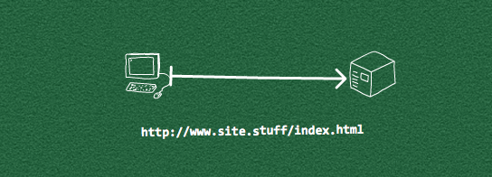
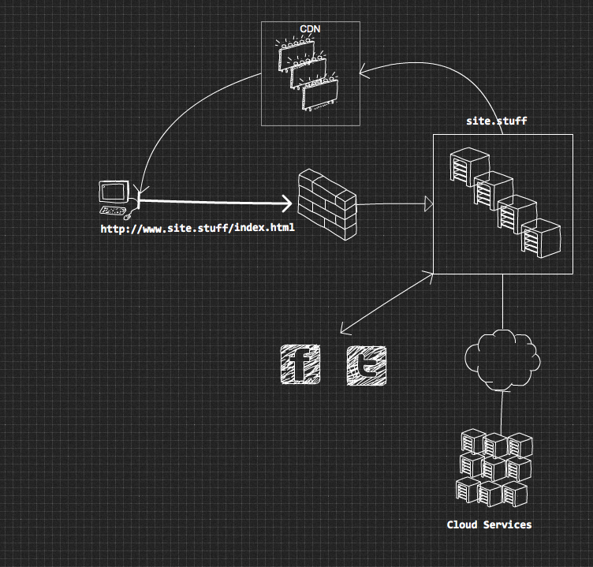
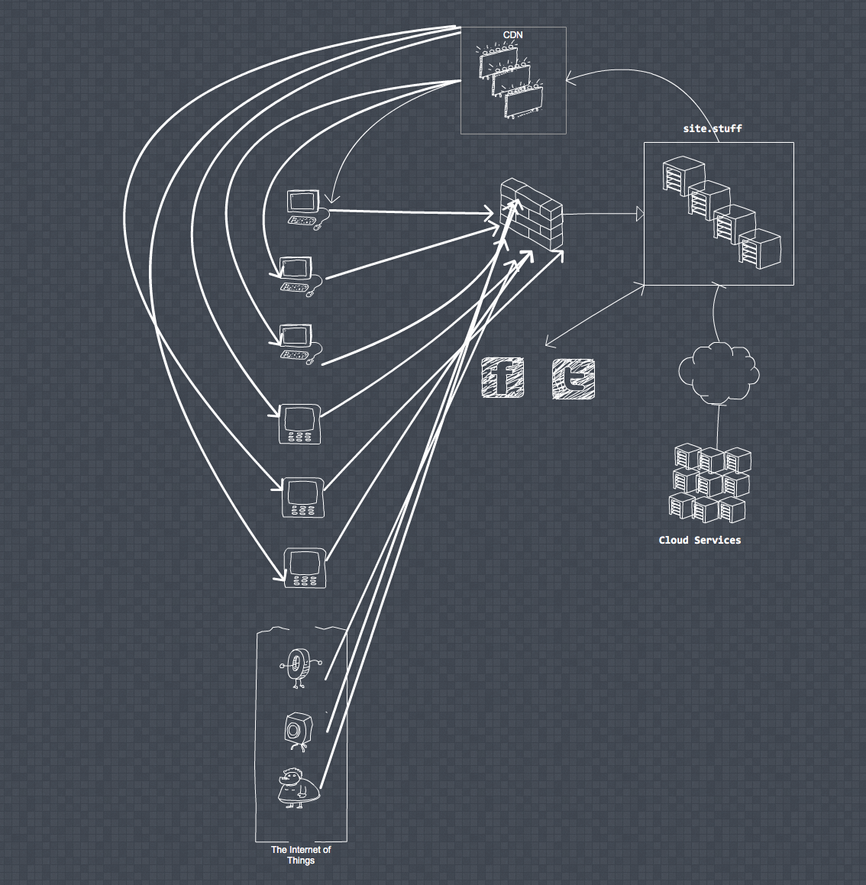
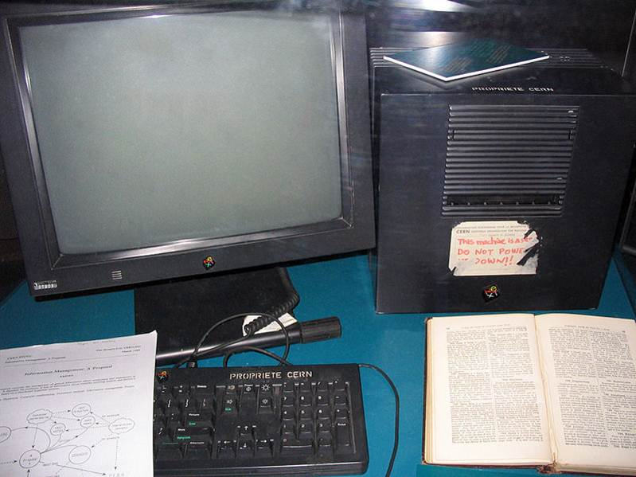
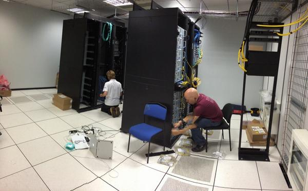

The Internet
How non computer people think it works

How it works

not really
Devices
From workstations and supercomputers (thousands)
To Desktop and Laptops in offices (millions)
... and homes (tens of millions)
to Mobiles, tablets and devices (hundreds of millions)
Now lots of things
An Internet of Things
billions

ok, how it really works
kinda, sorta
Worked Example
5 of friends want to arrange where to meet on Saturday night
- when all friends are in the same room
- when all friends are in different places
- think about distributed concensus and the network
Concurrency
- Concurrency sets of events which happen simultaneously. The real world is concurrent, and consists of a large number of events many of which happen simultaneously.
- Parallel happens at the same time
Concurrent (two queues and one processor) and Parallel Programming (two queues and two processors)
Systems may be distributed over several computers: a system of a number of independent concurrent processes.
Beware the Fallacies
- The network is reliable.
- Latency is zero.
- Bandwidth is infinite.
- The network is secure.
- Topology doesn't change.
- There is one administrator.
- Transport cost is zero.
- The network is homogeneous.
CAP
The Three Choices
The CAP speaks of access to data, that data being in the right state and it is always possible to get to it
- Consistency
- all nodes have the same data state
- Availability
- the system can send and receive responses
- Partition Tolerance
- The system can keep functioning in the face of arbitrary network failures
System Properties
- distributed processing: a network of distributed processors
- isolation : Two processes operating on the same machine must be as independent as if they ran on physically separated machines. Without sharing, everything necessary to perform a distributed computation must be copied.
- Causal ordering: If A sends a message to B then B can only receive this message at some point in time after A sent the message.
Rewind - The Web
A journey through web 1.0 - 4.0
The Web 1.0 1993
A computer, to connect to others to share research

Why did Web 1.0 fail?
- IPv4 - Limited Public IP Address Range
- Bandwidth - Dialup/ADSL
- DNS - Registration Non-trivial
- Web 2.0 - Centralisation became good enough
Web 2.0 Positives
- Browser Wars Mozilla vs Google
- Closer Browser Implementations
- Enhanced Client Runtime - HTML 5 - CSS3
- Large systems led to distributed systems theory moving out of academia - PAXOS to RAFT
- Bittorrent 20% of North American Traffic
To Web 3.0
- Symantic Web
lack of general-purpose usefulness that prevents the required effort from being invested
- Trust - THIS IS IMPORTANT
Our ability to create our own gated networks will enable the next set of webs
Trust
- Reputation Based Trust
- Zero Trust
- Policy Based Trust (NO THANKS)
Reputation Based Trust
- Belief Ratings For Statements
- Trust Rating Between Agents
https://gist.github.com/pfraze/e314196dcecd4c49382d
Web 4.0 Intelligent Personal Agents
- Trust is now a solved problem
- IPv4 - Superceded by IPv6
- Bandwidth - Uplink and Downlink becoming larger
- DNS - Still the problem
The DNS Problem
- Not just a registration issue
- Attaches content to a location
- The current URL format
https://gist.github.com/pfraze/e314196dcecd4c49382d
- Should be : e314196dcecd4c49382d/pfraze

IPFS - First Iteration of Web 4.0
- Removes address from content
- Leverages distributed systems knowledge from 2.0
- Transport agnostic so more efficient transports than HTTP can be used
- Doesn't try to solve ALL the problems
- https://ipfs.io/
Alternative Webs
- firechat – Adhoc Chat Network
- kwizzi – Zero internet eduction
- Ebola Relief - field recording